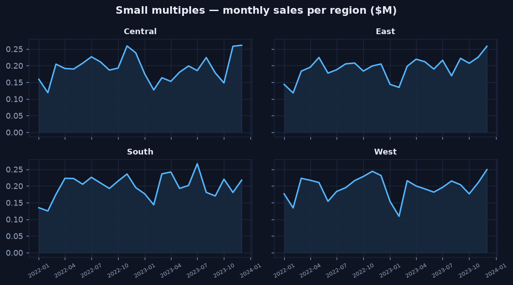
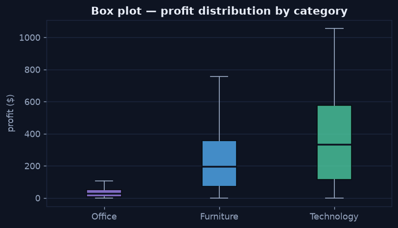
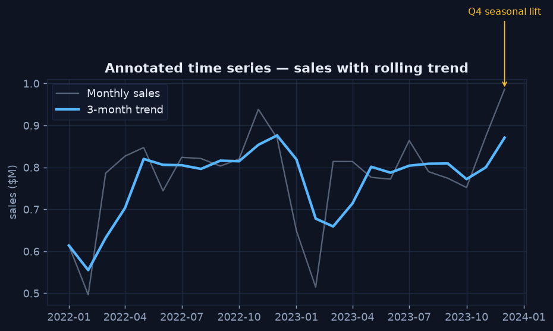

Beyond the Basics — Advanced Charts
Chapter 3 — Patterns for Richer Questions
Once a question gets richer than a single comparison, a handful of chart patterns carry most of the weight. Each one below answers a question the basic four can't, and each is shown with the code that produced it.
Small Multiples — Compare Many Series Without the Tangle
Plotting four regions as four overlapping lines on one axis produces a tangle. Small multiples repeat the same chart once per category on a shared scale, so the eye compares panels instead of untangling lines. The shared axes are what make the comparison fair.
Python · pandas + matplotlib
regions = sorted(orders["region"].unique())
fig, axes = plt.subplots(2, 2, figsize=(9, 5), sharex=True, sharey=True)
for ax, reg in zip(axes.ravel(), regions):
m = orders[orders["region"] == reg].groupby("month")["sales"].sum() / 1e6
ax.plot(m.index, m.values)
ax.fill_between(m.index, m.values, alpha=0.12)
ax.set_title(reg)
fig.suptitle("Small multiples — monthly sales per region ($M)")
One panel per region on a shared scale — the Q4 lift is clearly common to all four markets.
Box Plots — Show the Whole Distribution, Not Just the Average
An average hides spread. A box plot shows the median, the middle 50% (the box), and the range, so you see how values are distributed and where they overlap. Here, Technology not only has the highest typical profit but also the widest spread — a fact a bar of averages would erase.
Python · pandas + matplotlib
cats = ["Office", "Furniture", "Technology"]
data = [orders.loc[orders["category"] == c, "profit"] for c in cats]
fig, ax = plt.subplots(figsize=(7, 3.8))
ax.boxplot(data, tick_labels=cats, showfliers=False)
ax.set_title("Box plot — profit distribution by category")
ax.set_ylabel("profit ($)")
Technology carries both the highest median profit and the widest spread — the variability matters.
Annotated Time Series — Put the Story on the Chart
A raw monthly line bounces around. Overlaying a rolling average exposes the trend, and a direct annotation ties a visible feature to its cause, so the reader doesn't have to guess what they're looking at. Showing the raw series and the smoothed trend together is honest — it reveals exactly what the smoothing removed.
Python · pandas + matplotlib
m = orders.groupby("month")["sales"].sum() / 1e6
trend = m.rolling(3, min_periods=1).mean()
fig, ax = plt.subplots(figsize=(8, 3.8))
ax.plot(m.index, m.values, alpha=0.55, label="Monthly sales")
ax.plot(trend.index, trend.values, linewidth=2.4, label="3-month trend")
peak = m.idxmax()
ax.annotate("Q4 seasonal lift", xy=(peak, m.max()),
xytext=(peak, m.max() * 1.18),
arrowprops=dict(arrowstyle="->"))
ax.legend()
Raw series plus a smoothed trend, with the Q4 peak labelled directly on the chart.
The Takeaway
- Reach for small multiples before stacking many series on one axis.
- Use a box (or violin) plot when the spread, not just the average, is part of the answer.
- Annotate the feature that matters so the chart explains itself.
Next: Designing a Dashboard →